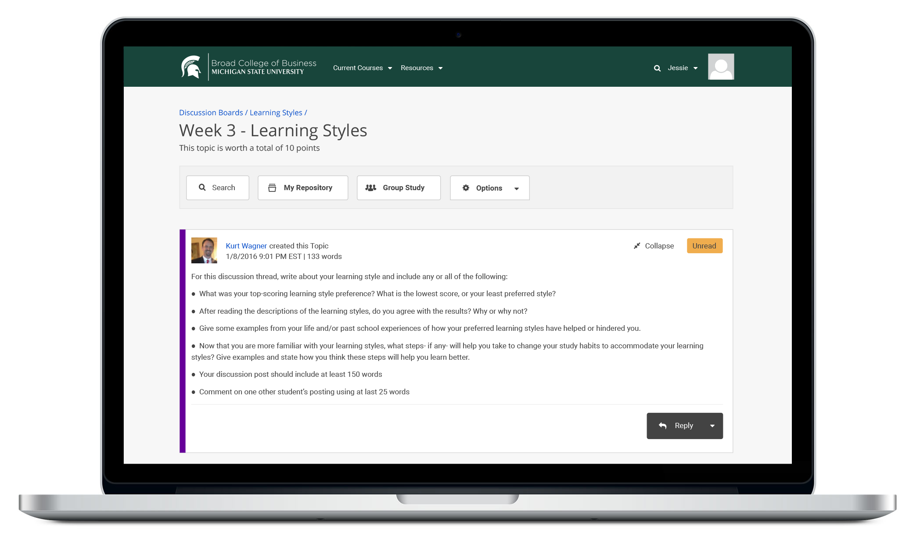

Project Type: Product Design
My Role: Prototyping Usability Testing Interaction Design Visual Design Front End
Project Status: In Progress
The purpose of this project was to create a more efficient experience for professors when they grade their discussion board posts. The discussion board is an essential part of the online education experience, regardless of the program.
Currently, professors are grading their discussion boards by using a dual monitor setup where they have the discussion board on one monitor and grade book open on another. I’ve designed a more streamlined way for professors to grade discussion boards and have outlined the significant improvements below.
When creating a topic or editing an existing one, professors can now quickly make any assignment gradable and also associate it with any grade in the grade book.
I created an icon to indicate to professors which topic is a graded assignment.
When the professors start the grading process, they will have the ability to see how many posts a student has made, grade each post, and provide feedback directly all without having to leave the page. This new process will save them a lot of time having to keep up with scores on their own or using a second computer screen.
When the professor has finished grading the “submit scores” button sends all students grades and feedback to the grade book all at once.
The instructor’s grading progress will be saved if they leave the page and come back, so they no longer have to keep track on a separate notepad or worry about grading everything all at once giving the instructor more flexibility.
After the design process, I did some usability testing with several professors, and we received a lot of great feedback. All the participants seemed excited to use the new process.